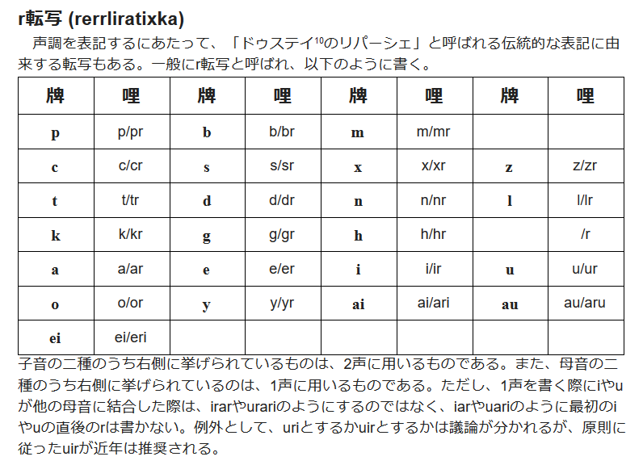
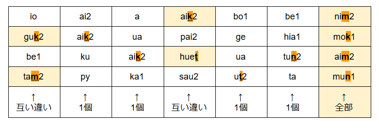

以下は考察ログであり、設定集はこちらに置いてある。
この記事を書いている段階（2017/11/09 23:00あたり）以前の話をまずまとめておく。
2017-10-15 16:12:09: 悠里広報の115字を収集 2017-10-15 16:36:45: 「神」やパイグ将棋系が欠けていることに気づく。 この辺りから、「頻用字を選出する」というよりは、「とりあえず現世で作った燐字を全部集めなくては」という方面にモチベが移動する。 2017-10-15 17:04:47: パイグ語文献をひたすら漁って字を集め始める。「類為貝刀声」「家善友美」「受与力須」「而即」（2021年1月25日追記：以上の4つはリンク切れ） 「御再乎於遠悪現(→真)噫」「雪夏冬」を発掘して17:25:11。 2017-10-15 18:05:41: 止広激付端律集を発掘し、「せっかくならパイグ音との対応表を作れば便利では？」と思いはじめる 2017-10-15 18:18:24: パイグ語漢字転写早見表が作成される 2017-10-19 01:33:21: 既にあったパイグ語OTM-JSON（21語のみ）をスクリプトによる自動登録で142語に増やす 2017-10-21 09:21:37: パイグ語から燐字を入力できるようにする 2017-10-21 16:41:40: 後に「パイグ語整理計画」と呼ばれることになる、諸文献の照らし合わせによるパイグ音確定作業が開始される。 なお、この作業には上記の入力システムが活躍した。この過程で旧綴り（「力」piuなど）も一掃される。 2017-10-23 18:23:12: パイグ語OTM-JSONがZpDIC-Onlineで公開される。 2017-10-24 19:36:56: パイグ語整理計画が一段落する。 2017-10-24 20:37:28: と思いきやPDIC辞書があったので、そのcsvをもらう 2017-10-25 06:09:xx: csvをGoogle Spreadsheetに変換する 2017-10-25 06:18:09: パイグ語漢字転写早見表と照らし合わせたところ、様々な案件が発生する。 2017-10-26 22:24:21: PDIC版との照らし合わせで74字追加される。 2017-10-27 10:26:15: PDIC版に基づき、ZpDIC版に語義が大量に追加される。という感じで、パイグ語辞書が充実してきた。
11月5日の13:30あたりから、どうやら「古パイグをやろう」という話になったらしく、17:00あたりまで作業をする。19:45あたりから作業が再開され、翌日01:00あたりまで作業が続き、古パイグの体系・古パイグでの再構音・韻図の韻名と声母名などを創作し終わる。これについての詳細は1章に記述することとする。
その結果を見たfafs falira sashimiから、11月6日の09:42:05に「ファスマレー語をすっ飛ばさないでもらえるかね」という指摘が来た。「祖語からの経過を描いて、ファスマレー語を飛ば」し、「既にある設定でその上私が作った物を無視したというのは癪に障」る、と指摘された。なお、ファスマレー語をすっ飛ばした真の理由は、j.vがファスマレー語資料の存在を知らず、syがラネーモル語とファスマレー語を取り違えていたことから発生した珍事だった。
さて、ファスマレー語が無視されている現状を改善すべく、資料を要求したところ、「資料そのものの公開は難しい」と言われ、j.vは不審に思う。また、ファスマレー語の体系・語形があまりにも他のラネーメ言語と合わないことから、「どうしようなぁ」となる。結果、なんやかんやあって、改定前ファスマレー語は「完全なアポステリオリ言語であ」り、かつアポステリオリ言語のためにパイグ・アイツォ・アイル・アイラニーヤ・タカン・エッツィアを全て改定するのは流石に「おどろおどろしい」ので、改定前ファスマレー語は廃止されることが決定し、ラネーメ言語史の創作として改定後ファスマレー語を新規に創作していくこととなった。
ラネーメの用語では上声という。
頭子音（IPA擬音表記）
| 軟 | 後軟 | 硬 | 後硬 | 閉 | 後閉 | 開 | 後開 | |
| 口端 | p | pɹ(pʰ) | b | bɹ(bʰ) | m | mɹ | f | fɹ |
| 口刀 | s | ʂ | z | ʐ | ʃ | ɕɹ | t͡s | t͡ɕ |
| 味識 | t | ʈ | d | ɖ | n | ɳ | ɾ | ɭ |
| 口門 | k | kɹ(kʰ) | ɡ | ɣ | h | x | ʔ | ŋ |
赤字は特に説が割れている設定のもの。場合によっては非真理になるかもしれない。
頭子音（リパーシェなどに基づかないラテン字表記；便宜上「古牌拼」と呼ぶ）
| 軟 | 後軟 | 硬 | 後硬 | 閉 | 後閉 | 開 | 後開 | |
| 口端 | p | pr | b | br | m | mr | f | fr |
| 口刀 | s | sr | z | zr | sh | shr | ts | tsr |
| 味識 | t | tr | d | dr | n | nr | l | lr |
| 口門 | k | kr | g | gr | h | hr | (zero) | ng |
頭子音（韻図の声母による表記）
| 軟 | 後軟 | 硬 | 後硬 | 閉 | 後閉 | 開 | 後開 | |
| 口端 | 力 | 風 | 箱 | 圧 | 大 | 汝 | 処 | 龍 |
| 口刀 | 嗅 | 席 | 祖 | 来 | 花 | 裁 | 広 | 彼 |
| 味識 | 終 | 茶 | 島 | 集 | 静 | 水 | 倉 | 新 |
| 口門 | 火 | 筆 | 層 | 祭 | 心 | 骨 | 王 | 冠 |
ラネーメの用語では下声という。
表でスラッシュで区切られているものはIPA擬音 / 古牌拼
| 無周 | 光周 | 闇周 | |||||||
| - | -p | -t | -k | -m | -n | -ŋ / -ng | |||
| 光軸 | 短 | a / a | 噫 | 同 | 加 | 北 | 皇 | 識 | |
| 長 | aː / ah | 此 | 四 | 互 | 書 | 母 | 出 | ||
| 短 | æ / ae | 我 | 労 | 善 | 戦 | 在 | |||
| 長 | æː / aeh | 将 | 倒 | ||||||
| 短 | ɔ / au | 形 | 長 | 傾 | |||||
| 長 | ɔː / auh | 門 | 獣 | 深 | 文 | 馬 | |||
| 闇軸 | 短 | ə / v | 猫 | 地 | 机 | 如 | |||
| 長 | əː / vh | 全 | 言 | 雪 | 絵 | 月 | |||
| 短 | e / e | 春 | 星 | ||||||
| 長 | eː / eh | 万 | |||||||
| 短 | o / o | 墨 | 声 | 草 | 色 | 三 | |||
| 長 | oː / oh | 山 | 手 | 季 | 行 | 積 | 悪 | ||
| 前後軸 | 短 | i / i | 反 | 極 | 蜜 | 族 | 金 | ||
| 長 | iː / ih | 男 | 国 | 正 | 機 | 紙 | |||
| 短 | u / u | 物 | 川 | 人 | 神 | ||||
| 長 | uː / uh | 銭 | 鳥 | 毎 | 守 | 無 | |||
ラネーメの用語では下声行という。
| 素 | - |
| 前 | -i- |
| 後 | -u- |
ここでいう「祖語」は一般に古パイグ以前の音韻を指し、要するにファスマレー語の前後どちらも指す。
祖語で短母音であったものについても、「鼻音韻尾」かつ「後子音でない」という条件が満たされた語は古パイグに至る過程で長母音化した。これを俗に「鼻音延長」と呼ぶ。故に、古パイグにおいて、短母音かつ鼻音韻尾である音節は基本的に必ず後子音である。
ただし、「如」vmと「即」hvmは頻用する機能語であるため適用されなかった。「御」amと「清」linに適用されなかった理由は不明である。
祖語の母音連続が古パイグに至る過程で融合した際の規則のこと。なお、あとで言及する「語の合体」とは明確に区別すること。
周: *sVV > sre cf. ceyuu.ar 糸: *bVV > brae cf. baeai.ar 端: *tVV > trau cf. taupwo.ar 春: *aiyoi > ngiae > ngie 冠: *airy > ngae 従: *tiuah > triah 茶: *tVV > tria cf. tisia.ar
sreが闇軸であることについては、さらなる研究が待たれる。
高: zrau fv > zruvh 山: tsoe > tsoh cf.(ve)zoe.ar 箱: *buou > buh 夏: xVV > shoh cf. xeh^eu.ar 広: tsVV > tsivh cf. zieo.ar 乎: iu muhn > iuhn 倉: lVV > lih cf. lisua.ar 万: *weci > ueh 層: gVV > giuh cf. guyao.ar 満: *bowa > boh 豊: hoh cf. xufoa.ar 包: *buou > buoh 認: hioh cf. hikoo.ar 少: hruvh cf. huroe.ar 煙: loh cf. lohu.ar 米: moh cf. mova.ar 酒: noh cf. naiwou.ar 片: tsuoh cf. chuwo.ar 件: uoh cf. wuo.ar
-iae-は-ie-へと変化したので、古パイグに-iae-は無い。
frvpとfvが同根であることから、「古パイグにおいてもrの有無は交替しうる」または「古パイグ以前に交替があり、それがrの有無として反映されている」のどちらかであることが分かる。
ng-とされている音は祖語の*rである。表の形式からしてもŋの位置に入りそうなのはʔɹなわけで、何故ng-と転写されているのかは謎である。
それぞれ以下のように変化した（リパーシェ転写）。
| 軟・後軟 | 硬・後硬 | 閉・後閉 | 開・後開 | |
| 口端 | p | b | m | hu |
| 口刀 | c | s | x | z |
| 味識 | t | d | n | l |
| 口門 | k | g | h | (ゼロ) |
a → a æ → ai ɔ → au ə → e e → ei o → o i → i u → u
なお、音素列/iu/は現代パイグ語の音韻としては[y]であり、正書法上のリパーシェ転写もyであることに注意。
長音であったものが1声、長音ではなくかつ後子音であったものが2声。
-p, -t, -k, -m, -nはそのまま保存されている。-ngの仕様については未創作。
先に言及した「母音融合」とは明確に区別すること。
語が合体した場合、後の語の声調が保たれる。但し、後の語が0声である場合は前の語の声調が保たれる。
律: iahk < iuh ahk 巫: truk < tram sruk 兵: krauk < kaik sruk 車: kauhn < kihk mauhn 赤: kohk < kahn pok 牌: praek < prae go 黒: fruok < fruo pok 白: liohk < lvht pok 党: tsrit < tsuih drat 青: nruok < nrua pok 勿: (nau <) nauh < muhn tsau
なお、後にpai2に変化したpraeから、/æ/が残存しpek2となったprae go > praekが生まれていることから、少なくともこの語については-ae- > -ai-の変化以前に起きた変化であることが分かる。
また、これらの語は韻図に載っていないことから、韻図の時代より後に生じた変化であることが分かり、また保存されるのが声調であることから、これらの語が形成された頃には長音・後子音の声調化は起こっていたものと考えられる。
1. と 2. は基本的に真理設定を書くように努めたので、せっかくならいくつか裏話をメモっておく。
これは、アイル語とパイグ語を比較していたら全くの偶然により発掘された規則である。気づいた時はめっちゃ楽しかった。
これは、パイグ語の1声がやたら多いことから発見された規則である。長母音はアイル語には残存していない（これも今回の調査によって生まれた設定）とはいえ、特に鼻音終わりにおいてやたら多いということ、既に再構している「母」mahmなどと合わないこと、などを一気に解決できる面白い説であったため、採用された。
これは、もともと「美軸雪」(hem1 lea1 let1)を説明するために考えた設定である。ちなみに、kya1という綴りは「正書法整理前にリパラオネ人などがそう知覚した」というだけであって、綴りの揺れであって音の揺れではないと考える。
まあ当然「春」の説明のためなのだが、割と自然な変化だしセーフでしょ。
韻図上の位置を表す表記は、「火善素 火此前 風我素 筆噫後 龍墨後 風噫後」のようにすることとなった。せっかくなので、古牌拼から伝統表記に変換するスクリプトを組んだ。
このスクリプトを組む過程で気づいた諸々を以下に記す。
表のラテン字転写のところで、ASCIIのg(U+0067)ではなくIPAのɡ(U+0261)が使われていた箇所を修正。
紙母の位置が違ったので修正。
「混」がtehnとなっているが、体系的な再構ならtvhnになるはず。直してもいいのだが、uehがuvhになって現ue1になったのと同様の現象を-ehnに認めてもいいかも。ちょうどパイグ語にeinがないことだし。
というか、「星」pretもその類だな。こいつは韻図に載せてしまっているからめんどい。
で、調べてみたらそもそもパイグのeiって今のところ開音節語しかない。ふーむ。
@s_y15 『周: *sVV > sre cf. ceyuu.ar、規則に従ってない(eは闇母音)』『「星」、pretなので規則通りだとpeit2だが、pretで韻図に載せちゃったし、恒例のごとく「-eitは-etに合流したのでパイグ語にない」を使うかどうか』『それに乗じて、「混」をtehnのまま残すか否か』
— .sozysozbot.@hsjoihs (@sosoBOTpi) 2017年11月11日
『おや？』
— S.Y@タカン系パイグ系日本人 (@S_Y15) 2017年11月11日
『現代のeiって末子音付かないしeでも良さそう』
ということで、採用となった。「古パイグ→現パイグ」に「古パイグの-e-は閉音節であった時は-ei-ではなく-e-になった」が追加、韻図の-ehnに「混」が掲載。
さて、上に書いた真理設定を再掲載するのはあまりにもアレだし、最新版の真理設定を単離したファイルを作るべきだな。一応Google Docsにあるけど。
作った。
例外であるsreについては、そもそも母音融合ではなく、アイル語のceyuuがcey+接尾辞-uuであるとすれば説明できる。ということで、そうなった。
SY「乎、新しそうだし韻図に載っていなさそう」とのことなので、「乎」は母音融合ではなく語の合体ということになった。そうすると、母音融合規則によってできる語は全て開音節語ということになる。
音韻変化の依存関係を有向グラフでまとめてみた。実際に暦上のいつぐらいに割り当てるかは今後考えていくこと。

@s_y15 古パイグに至る過程のhiah < /hi:a/とかziah < /zi:a/とかって「韻図の体系に載せるため」みたいな話になってたけど、韻図以前のaiやauが古パイグでæとɔになっているように、単純に「下降二重母音が消えた」とかでもいいんじゃないかなぁ
— .sozysozbot.@hsjoihs (@sosoBOTpi) 2017年11月11日
ということで、「下降二重母音の消失」を規則に載せた。
祖語やアイル語を見る限り、-ngになりそうなやつは「清」lin < *lingq と「付」krun cf. kunge.arぐらいである。漢語諸方言で-m / -nが残って-ŋが残っていない例が乏しいことから、古パイグの段階で既に-ŋの例がかなり少なかったという説明が適切であろう。
ちなみに、これにより韻尾の頻度は次のようになる。
| 開音節 | 121 |
| t | 45 |
| k | 31 |
| n | 22 |
| p | 18 |
| m | 18 |
| ŋ | 2 |
あ、あと、「清」が伸びていない理由は、-̵ŋの前ではなぜか鼻音延長が起こらなかったからである。なぜだろうなぁ。
「清」と「付」を変更して、韻図に載せた。また、-ngが-nに合流したことを書いた。
「後」が未造語・燐字未収録であることが判明したので、収録し造語（現パイグyp；古パイグiup；同根アイルyubui）してもらった。するとup韻が無いので「後韻」となるはずだが、「iup;王後前」は分かりにくいので、急遽-up韻をもう一つ造語することにした。どうせいつか作られる語なんだしセーフやろ。ということでblubla.arからbrup > bup2「歪」が造語されることに。
ということで、-up韻は歪韻になった。
「之」は祖語で*anlであるため、古パイグでangであったという説がある。-ngなら鼻音延長も起きないし、文法語なら弱化が起きても違和感はない。ということで、古パイグではangだったことになった。
「遠い」があって「近い」が無いのはアレなので造語することとなった。
アイル語で「近い」はceixeiである。ということは、パイグだとceiとかそこら辺になりそうである。
さて、既に「周」cei2という字音があり、こちらはアイル語のceyuuと結び付けられている。ここで、ceyuuとceixeiが同根語なのではないか？という案が出た。祖語はsreiであり、それが何らかの接尾辞/uu/と結合したものがceyuu、反復による/sreisrei/がceixeiとなった、という案である。
となると、「ラネーメ圏ではこのceyuuとceixeiに当たるそれぞれの語に字が振られ、『周』と『近』という2つの燐字になったが、パイグ・アイツォでは分化しなかったため『周』と『近』は異体字扱いになった」または「sreiに当たる単一の字が存在したが、その字の2つの異体字がアイル圏ではそれぞれceyuu相当とceixei相当に役割が固定された」と考えるのが良さそうとなった。
ということで、燐字としては「近」と「周」の2字が存在するが、パイグ語では共にcei2であり、同一語である、ということとなった。（なお、同様の例としては、「在」と「如」が元々は単一の字であったらしい）
辞書には、
「周」の異体字である「近」を使うこともある。なお、アイル語ではceyuu「周囲の；周辺の」に「周」を使い、ceixei「近い；近接した」に「近」を使う。
と載せることにした。
アイツォ語も古パイグに由来する言語で、「光山」などはそのままaik2 zo1である。しかし、パイグでzep1である「言」がzepという資料がある一方で、11月11日のS.YのDMに「zep2はアイツォだなぁ」とあったりする。また、「撃」についても、パイグ語はkut2なのに対しアイツォ語はkut1である。（参考：例1、例2、「アイツォなのでkut1で正しい」という発言）
とか言ってたらfafs氏がリパライン倉庫にあるアイツォ語の記事を手放してこちらに託してきた。とりあえず魚拓とローカルコピーを作成。さらに辞書ファイルも入手。
ということで、アイツォ語も見ながら古パイグとかをやっていこう。
燐字海のパイグ語の欄には「古音」という欄がある。字数も多くないので現状の全記事のを載せると、
「古音」 「古パイグ」 一 ret ngvt < *las 二 rik ngik 三 rom ngom < *lumi 四 aap ahp < ahm < *ngam 五 uun uhn < *slqna 六 uun-ret nrvt < uhn ngvt 七 uun-rik nrik < uhn ngik 八 uun-om nrom < uhn ngom 九 uun-aap nahp < uhn ahp 光 raik ngaek 闇 huet fvt 水 nrua nrua 火 kaan kahn 皇 tram tram 神 trun trun 人 cruk sruk 足 xii shih 手 hoop fohp 筆 krua krua 字 maan mahn 在 raim ngaem 無 muun muhn 言 zeep tsvhp
という感じである。
まず、古牌拼(現世ラテン文字ベース)と古音リパーシェ転写の差が見て取れる。顕著に違ったり紛らわしかったりするところは青字とした。
古音リパーシェ転写：
| 軟 | 後軟 | 硬 | 後硬 | 閉 | 後閉 | 開 | 後開 | |
| 口端 | p | pr | b | br | m | mr | (後述) | (後述) |
| 口刀 | c | cr | s | sr | x | xr | z | zr |
| 味識 | t | tr | d | dr | n | nr | l | lr |
| 口門 | k | kr | g | gr | h | hr | (zero) | r |
| 光軸 | 闇軸 | 前後軸 | |||||||||||||
| 短 | 長 | 短 | 長 | 短 | 長 | 短 | 長 | 短 | 長 | 短 | 長 | 短 | 長 | 短 | 長 |
| a | aa | ai | aai | au | aau | e | ee | ei | eei | o | oo | i | ii | u | uu |
（なお、現状燐字海の記事で使われていない母音や子音に関しては、この記事を書いている最中にS.Yと話して決めた。）
さて、huetやhoopという箇所を見るに、「古パイグf > 現パイグhu」という変化は既に「古音」の時点で起きていたことが分かる。
一方、「古音」の段階ではrや長音の声調化は起こっていないことがわかる。また、「古音」で六〜九が二語として書かれていて、且つ現代パイグ音でのこれらの読みが「声調保存的な語の合体」によるものであることから、韻書にも六〜九は単一語としては載っていないであろうことなどが推察される。
また、「万」は「古音」においてもueei（ueh）であってuee（uvh）ではないということにした。-ae- > -ai- が「語の合体」以降である以上、-ue- > -uv-などについてもその辺りだろうという見当をつけてのことである。
というわけで、音韻変化の依存関係は次のようになる。
PDIC由来の、「訳語」というプロパティ欄に全部を押し込むという混淆とした記述体系を改め、品詞ごとに記述を分解した。
ただし、「訳語：→人権」などというものについてはよく分からなかったので後回し。
分解した記述をZpDIC側の「訳語」欄に持っていき、「人権」系統は「???」と改名。
辞書に漢字転写を追加しながらパイグと照らし合わせたところ、単音節語127語のうち、パイグ語と別起源と思われる語が10語、声調が異なる語が7語あることがわかった。
別起源：
ba4 声、鳴き声 ce1 十万 cut2 山 kor3 刀、切る mat ～のために mu1 千 nau1 全て、全部 pier 〜です tip 〜した tiu2 強い、鍛える
声調違い：
燐字 パイグ アイツォ 別 pau1 pao 石 sy2 siu1 目 ta1 ta2 皇 tam2 tam1 彼 zap2 zap 其 ze1 ze2 言 zep1 zep2
要するに、アイツォ語の中で、パイグ語に同源語のない語は7.9%、パイグ語と声調が異なる語は5.5%で、残る86.6%はパイグ語と基本的に一致するということが言えるわけだが、ここで着目したいのは声調違いについて。
pau1 / paoの例を除けば、基本的に歯音で始まっていることが分かる。さて、これをどう考えるか。
一つの案としては、ts / tsrやt / trが混乱した時期があったという説である。
わーいヾ(๑╹◡╹)ﾉ"
— Яйценосные Киты🐳 (@ransewhale) 2017年11月24日
そういえばそろそろ設定したい感ありますね
「どのラネーメか」「基底はリパラオネかリナエストか」とかからまずは決めていきたいですねぇ
— .sozysozbot.@hsjoihs@jekto.vatimeliju (@sosoBOTpi) 2017年11月24日
基底はリパラオネがいいかなぁと思っています
— Яйценосные Киты🐳 (@ransewhale) 2017年11月24日
ラネーメの方については古パイグ語を希望したい(TLで度々話題になるパイグ語が気になっている顔)
ということで、ホエールの担当言語は古パイグから燐字と燐字音と燐熟語を借用することとなった。
「立」と「木獣」が増えた。「木獣」はヴェフィスの借用がhup1っぽさあることに由来していて面白い。
この記事から、燐字のみにまつわる部分を「パイグ語・古パイグ・燐字などについて考察する」という記事に独立させた。以降、こちらでは独立先とは別々に、今まで通り章番号を連番に振っていく。
古パイグではmiht【大正素】であって、韻図に載っていたということになりそうだ。アイル語mitaと同根。
流石に塩はあるだろう、ということで造語となった。アイルquvoo、バートghíyoと同根のkuo1となった。
iau, uauは開音節しかないことが判明したので記載しておく。uoは普通にあるので、何らかの理由があるのだろう。どうせ古パイグにもない。
理語辞書から12句引っ張ってきて登録した。熟語の登録があまりできていないのでしていきたい。
介音uと韻尾m,nの相性はあまり良くないようだ。
結果として、
uaim → uam (uaum不存在) uain → uan (uaun不存在) uom → uem uon → uen uim → ium uin → iun
ということになった。
どんぐりの存在感が大きいので、「種」をどんぐりに当てることとした。リパライン語で造語されている語の語源であるdexu.arから、現det古dvtとした。
現代パイグ語の音節表を作った。
古牌データというスプレッドシートを立てた。この過程で幾つか話したことを書いておく。
これは、iau, uauの閉音節が古牌の時点でio, uoに吸収されたということになった。まあ、当時はそれぞれɔとoであったし、特定条件下で吸収されていてもおかしくはない。
一方、uとmnについては、「古牌の時点ではuom /uom/ は存在できた。後に二重母音化して/uəum/となった際に/uəm/に吸収された」「古牌の時点ではuihmに/uːim/などが押し込まれている可能性があり、/yːm/としてiumと合流するのは後世」ということになった。
SY「パイグ人は『標準』をなんでも『官定』と言いたがる」 j.v「辞書に載せよう」
現代パイグにはci-が無い。cy-はある。
この理由としては、前に言及した「古パイグsri-は例外的にx-に変化した。ただし、sriu-は規則通りcy-である。」が関わっていると考える。
現時点では偶然存在しない古パイグsi-も、同様にx-に変化したのであろう。もちろん、siu-があったならそれはcy-だろう。
古パイグzi-, zri-については普通に現代パイグでsi-だが、まあそれはそもそもx-の有声音が存在しないのだから当たり前である。
アイツォ語や古いパイグ語資料などに出てくる、リパーシェ転写の表記揺れについて調べた。
結果、揺れがあるのは以下のとおりであり、思ったほど揺れのパターンは多くないことが分かった。
標準 → 揺れ ia → ia / ya / yua ian → yan au → au / ao ie → ie / ye o → o / ou / eu io → iou y → y / iu / yu yt → iut yn → iun / yun
なお、一覧はここの「アイツォ/統一前」シートから確認できる。
さて、この中で気になるのは『「磨」現代標準パイグia1；アイツォyua1』と、ここには後述する理由により載せなかった『「亦」現代標準パイグy；アイツォyuo』である。これらは、
ということから、実際に/ya/や/yo/といった音で読む方言があるのではないかという話になった。
前に子音が立っているときには現れていないことから、このyは介音ではなく、一種の声母として見るのが適切であろう。それぞれアイルではyuh^aa.arとyujo.arであることから、これらの音は（韻図音に直に由来するのではなく）アイルの影響を受けた語なのであろう。
現代標準パイグ語を整理するにあたって、これらの非韻図音は人為的に排除され、韻図に基づいた音が標準とされたのだろう。アイツォ語には韻図と声調が合わない語がそれなりにあるが、パイグ語にはあまりないのも、その人為あってこそである。「乎」などは標準パイグ語でも例外声調だが、これはあまりにも常用する語である以上人為的には変えられなかったのであろう。
S.Y「間投詞がaだけなのもなぁ」
j.v「そう言えば、アイルt'aitaiu『［間］（強い悲しみ）なんとまあ！』から祖語*taiq-taiqっぽいのを立ててバートdeja『なんとまあ』を立てたなぁ」
S.Y「よし採用しよう」
ということになり、牌taiとなった。燐字の漢字転写としては、議論の末「咍」が採用された。
現代標準パイグ語とアイツォ語には細かい差が見られる。
最近固まってきている論として、31.でも言及した「標準パイグ語が整備されたときに絶対韻図参照したでしょ」というのがある。語によっては法則に従わず例外的な変化をした語がままあったものの、パイグ語を標準化する過程でそれなりに『韻図に合う音』にバイアスがかかって採用された、という話である。
さて、ということで、もともとのアイツォ語辞書には収録されていない諸方言音・表記揺れなどを仮に「アイツォ新音」としてまとめてみた。
恒例のパイグ語漢字転写早見表に載せているが、このファイルは変更の可能性があるのでtsvも用意した。
具体的に収録したのは以下の6音。
字 牌 アイツォ新音 即 hem hum 心 hia1 hia2 互 huat1 huat2 撃 kut2 gut2 * * tup1(打つ) 言 zep1 zep
この内、「心」はアイツォ語でもhia1, 「撃」はアイツォ語でもkut2、「言」はアイツォ語ではzep2である。そういう意味で「アイツォ新音」というのはinistieserl xale cyfoi「誤解を招く命名をされたもの」なのだが、まあ私jekto.vatimelijuが2秒ぐらいで考えた名前なので仕方がない。「パイグ・アイツォ連続体の中に存在する何らかの方言音をとりあえず収録したものという理解が正しい。
他言語の証拠から、非パイグでは*f-と*fu-が対立していたことが判明した。
| 祖語 | 古パイグ | アイル | バート | 具体例 |
| *ph- | f- | ph- | bh- | 古牌fohp藍phobo伐bhoma, 古牌fvt藍phedu伐bhát |
| *f- | f- | f- | w- | 古牌fohk藍foku伐woghit, 古牌fahp藍fafi, 古牌fri藍foje |
| *fu- | f- | h- | h-, 0- | 古牌fro藍huroo伐horabát~horúḷ~úro, 古牌frvp藍hep'iai伐epa |
一方、古パイグにおいて、f-の後にu介音が来ている例がなく、この*f-と*fu-は共にf-として現れている。
ということで、これは韻図の時代に至るまでの過程での合流と考えられる。
これらはそれぞれ、「語の合体」によりnua2 + mok1 → muak1、kia1 + sak2 → kiak1としてできた語であろう、ということになったので、韻図から抹消しよう。kiak1は声調が合わないけどまあいいや。
あ、待てよ、アイルhiki系統で立ててもいいなぁ。
S.Y「hik0声とかになりそう」とのことなので、祖語はhikか。心蜜素。
ということで、燐字海・パイグ語漢字転写早見表・古牌データを修正。
燐字の方でやったとおり、「犬」が造語されたので登録。
燐字の方でやったとおり、追加された。「直」は藍jooiから牌io1だが、さて韻図音どうしよう。
現状で「王」が24個、「冠」が15個なので、25:16でダイスロール。王。
アイルloduのlot2となった。ということは古パイグはlrotで、祖語は*l₃-か。
a, pau2 ka1 pau1. xau2 ka1 xai2. zep2 ka1 io1 cuop2.
— S.Y (@S_Y15) 2018年4月2日
mun1 ze1 po1 a. ka1 kak a cuk2 mun1 ak1 SORLOR xai2 a. ua cuk2 ge hia1 hau2.
— S.Y (@S_Y15) 2018年4月2日
a? ze1 put yn2? pai2 aim2 hop1 a ak1 be1 ka1 xai2 ua......
— 筆墨風 (@qafopwa) 2018年4月2日
a? ze1 nan2 kak a ak1...... pau1 ka1, "xau2" ka1 "xau1" yn2?
— S.Y (@S_Y15) 2018年4月2日
tai! put a! pai2 hue1 a kak sui2 lin man1 ua pai2 bau2 cuop2. ua...... cuk2 bau2 huai2 a!
— 筆墨風 (@qafopwa) 2018年4月2日
a, sui2 ka sui1...
— 筆墨風 (@qafopwa) 2018年4月2日
xai1なのだが、xai2というミスが多発したためアイツォ新音になった。
sui1だがsui2になっている。sy2のアイツォ音がsiu1であることを考えると興味深い。これはアイツォ音にしようかなぁ。
やっぱり、舌頂音だと声調を混同しやすい傾向にあるのな。
なんか牌有辞典が生まれた。
「裁」の韻図音にミス。shiuhじゃなくてshriuh。
アイルimuからim1ということになった。新たな韻である。さて王冠ロール。25:15なので26:16でロール。王。
ihmは無いので新造となる。毛韻だな。王毛素。
韻が増えるのとか久々すぎるのでいろいろなところに加筆せねば。
前に作ったOS絡みの単語とか、既に用意されている共産主義系統と果物系統を採用。
アイルdoche、バートḍázの燐字「店」を追加し、パイグではsu1 hueと言うんだろうなぁと、字形はsu1 hueなんだろうなぁと。
アイルkanata、バートkánatúḷ「走る」と、アイルkanaka、バートkánaghúḷ「跳ねる」が合流した「躍」kan1ができた。aに続き2種目の同音異義である。
「韻図と方言音」に
"rita.ar" nanode, kisokuteki ní fa "it" to náru xazu. Airu go no egkyag.と書いてあるが、これは嘘（cf. 軸, 雪）なのでlが復活した。燐字海・清声集・早見表・古牌データを修正。
アイルcouyau、バートṣoyaから古牌sroh(席山素)、牌co1となった。同音異義語シリーズである。
バートkhak、パイグkuak1共に咳の擬音として使えそうという話になり、採用された。パイグでは『父の畳語で「咳をする」とかなんでしょ』とのことである。
リパライン語でstiever「牛」とかnitud「牛乳」とかli'usnirta「リウスニータ；ホットミルクセーキ」とかあるんだから普通にラネーメにもいるでしょう。
アイルjuo「牛」juro「乳牛」が面白いので採用。パイグはio2となり、ということは当然古牌はngio、冠墨前である。
「肉」がgekといつの間にか決まっていた。韻図音はgvkとなったが、vkは初めての韻なので作業が大変である。
「鎖」という字を定め、パイグ人はそれをkin2 niek1と呼ぶのだということになった。こういう「逆熟字訓」みたいなやつにはパイグ語で名前がついていると良いのではという話になり、「多くを使って一つを言う」とかではとなったが、パイグ語で「多い」という概念を表すのが不便ということが話題になった。
というのも、kitは「とても」みたいなアレであり、geも複数接辞としてよく使うからである。
ちょうどバートに「多くの」みたいな連体詞（バート語用語では「形容詞」）が欲しかったということもあり、造語することになった。いつもいつもアイルから持ってくるのもアレなので、たまには韻図ロールをすることに。
『「多」の音決める』で決めて終馬素、つまりtaun1ということになった。ちなみに、介音のロールをしていないことにたった今気づいたが、まあ素しかないだろうし素としよう。
必要だろという話になり、韻図ダイス。王机後で現uet。「闇」と韻が踏める。
卵の話になり、「球体を言う方法がない」と言われたので作成。uetと近そうななにかということも兼ねてアイルcwelo「玉」になった。
「リウスニータの作り方」を作る過程で「網」がほしいということになったので、作られた。「乳」に関しては、「蜜」とかの意味範疇とかに入るかどうかとかで議論となったので後回し。
yst tesnok xosnies yst restut.
— Fafs F. Sashimi@いせにほ7/5発売 (@sashimiwiki) 2018年7月12日
lit：「右手で左手を慰める」
意味：(ネガティブにとらえて)身内で褒め合う 馴れ合いする#lipayuna
を見て、「これをどう言うだろう」という話になった。「言貝」「貝言」などが提案されたが、最終的にこの表現についてはky1 hop1 dit1 tyn1 hop1であって、貝言は「褒める」、言貝は「取り繕う、虚勢を張る」とかかなあ、ということとなった。2018年7月12日の話である。
追加。lin-marnの方に書いた。あと、雅語「毛獣」も追加。
2018年9月30日現在、パイグ将棋のルールに微調整を入れる提案がされている。皇効を受けたときの動きが、現状では必ず強くなっていたのが、必ずしもそうではなくなるという方針になるそうなので、現行の版を「強い皇効」、新版を「官定」とすることにした。
それをパイグ将棋リポジトリにも明記して、あとtam2 py「皇効」を造語した。
この章は新造した「パイグ将棋について考察する」にも載せた。
一旦は「己言」になりそうになったが、「軸言」になった。
j.v 2019/01/12 23:30
@SY 造語提案： huet zep1 a la1（闇言之軸）：ナウトゥホーマーエー（バート文字のシローレーカー）
nautuhomá eのeはla1と同根なので
SY 2019/01/12 23:36
よさそう
j.v 2019/01/12 23:37
というかhuet zep1が載ってないですな。載せます
SY 2019/01/13 00:35 la1 zep1が母語とすると、「主要言語」はなんと言うだろう j.v 2019/01/13 00:42 huep2 la1 zep1 とか？ 「〜という場所/地域の主要言語」ならこれでいけそう SY 2019/01/13 00:45 確かに j.v 2019/01/13 01:13 載せとくか 例文要りそうだな SY 2019/01/13 01:18 "pemecepe lukup"（なんて呼ぶんだろう）ka1 kia1 sak2 dop1 dat2 a huep2 la1 zep1 a et2. とか？ j.v 2019/01/13 01:19 なんて呼ぶんだろうなぁ SY 2019/01/13 01:20 kia1 sak2 dop1 dat2 zep1 (長い dop1 dat2 zep1 とか略しそう j.v 2019/01/13 01:20 とりあえず「（[場所] + aを直前に伴って）〜という場所/地域の主要言語」とでもしておくか 語義欄 SY 2019/01/13 01:21 kait j.v 2019/01/13 01:21 dop1 dat2 zep1も載せよう 載せた コミットする
パイグ将棋で、王が同色駒の代わりになること。2声を歪声とも言うので使えそうという話になった。あと、最近j.vが名詞化接辞として「術」が便利であることに気づきはじめた。
笛の穴を描写するのに必要だったので考えた。貫通している穴と凹みとって別概念な気がしたので2つ立てた。uepとbot1。
ということでアイルrokuからパイグlok1追加。
アイルboungauからパイグbon2追加。
sy「ヴェフィスってパイグ語でなんていうんでしょうね」
— Fafs F. Sashimi@いせにほ好評発売中 (@sashimiwiki) 2018年11月11日
fafs「uep1か？」
sy「ああ、uep1、そういえば「哩字」(lip man1)でリパライン字って指しますからね」
fa「ん？リパライン字？」
sy「あっ（笑）、リパライン字ってなんだ」
fa「多分「哩字」って「燐帝字母」のことだぞ。」#悠里界隈名言録
この2単語収録できてないですね、収録します https://t.co/95X1Ui4nMx
— .sozysozbot.@hsjoihs@jekto.vatimeliju (@sosoBOTpi) 2019年2月12日
載せなきゃなぁ。漢字転写どうしよう。ちょうど「穴」がuepになったしその辺りもアリか。
「多」を動詞化するのも険しそうだし新造されることとなった。⿰足多。なお音はまだ決めていない。
「淮」を新造し、二単語収録。
skarsnaに対応する姓。kruaehでkuai1となった。「近頃の若者は『謝』と『翰』を同様に発音して嘆かわしい」みたいな文章が書かれてそう。
狩りをしたり採集をしたりするのを表す単語。
zip1「失う」
zap2, zau, zit1, zip1, zie1, ze1, zep1 は /t͡ɕ/ だけど zo1, zat1, zuo1, zui1 は /ts/ よな、という話になった。
結果としては、
とすることで、以下のような説明が得られることが分かった。
SY「歯音はかなり声調化が速く、子音対立が失われるのが速かったのでは」
SY「古音理字では声調を記録する手段が無かったため、そのような表記になったのでは」
なるほど。
「軍」(kaik dat2) (⿰兵⿱兵兵)：軍を表したり、パイグ将棋の片方の陣営を表したりする。
「隊」(nie) (⿱兵兵)：パイグ将棋の駒を製造する際に8つひとまとまりで作るが、その時のまとまりのこと。
「燐字において『品』のような構成はあまり用いられない。パイグ文字の官定が左一なのもこの先例と関係がある」となった。
mitになった。
⿰闇氏というバートニーマシュを表す人名用燐字。ban2 nim2かbat2 nim2。
机戦牌語動画（未公開）の収録により間投詞が収集できた。「he / hen 軽い納得」「ua 軽い驚き」「o 感動を伴う驚き」「em 納得/悩み」「n/m 悩み」。
この内最初の2つには漢字転写が定まった。
z が /ts/ なのか /tɕ/ なのかだけが載っている辞書があるべきだと思い、書いた。名前はSY提案の「ze1 zo1 a ak1」とする。辞書ファイルとして追加し、さらにパイグ語辞書においてz/ts/を含む単語には手動で発音表記を載せるようにした。
lin-marnリポジトリでmysterious_encodingというやつの操作をしていたところ、乱択した燐字列「思通夘認笑強大草足天」が出てきて面白かったので、解釈しようとなった。
どこまで含むんだろう。腕を含むの？脚(leg)を含むの？
パイグ人に日本将棋を見せてみました！
— 日本机戦連盟@パイグ将棋 (@cet2kaik) February 14, 2020
「ie tak1 pok hue1」（盤面が色鮮やかじゃない）
「kua2 kauk2 aum2」（文官がいない、兵に偏りすぎ）
「zuo1 mok1 ni1 na1」（駒の動きがちまちましている）
「zie1 pau1 mun1 et2」（マスが正方形じゃない）
「zuo1 xai1 zat1 yn2?」（コマの形怖くない？）
清王謝石からクレオス・ド・メアパトロネストの意味の「呉」が発掘されたので、登録。kreosってことは、まあ、kot2とかいう字音でしょ。
音符である「軸」はアイツォでlea1などと書かれることから、不規則変化を経ずにaiになったものと判定。
SYが2020年2月17日に「夢で得た表現：甘人（可愛い人の意）」とあるので、tum1に「かわいい」を追加。
「V而一月行終。」になりそう、となった。
詳しくはlin-marnに書いてあるけれど、「須」の要素に「虫」が入ることとなったため、語形と語義を固めることとなった。
対象のアイル単語はlibwa「巻き貝」。ということで、パイグ「虫」は非常に語義の広い単語であって、アイルではそれが狭まった。
まあ字形からするに足が生えてる昆虫みたいなのが字源っぽいわけでね。
考察の結果、「人・鳥・魚・獣でなくてやわらかくて非常に細長いというわけではないもの」という感じになった。
「やわらかい」範疇については、蟹はアウトで「貝」判定、カタツムリ「貝」、殻を取り外した貝類「虫」、カエル「虫」、ダンゴムシぐらいのかたさは「虫」、エビも「虫」。
「非常に細長いわけではないもの」によりミミズ・蛇はアウト。
字音はli2。
リパライン語辞書に「Varxlekung ad ciurleso 連将撃裁 準備してから、思い切った行動をすること」「連将撃裁(niek2 uai1 kut2 xy2)はパイグ将棋にまつわるパイグ語の慣用句の翻訳借用である。しっかりと準備をして、思い切った行動をすることである。」とあるので、これをパイグ語辞書の方に載せた。
詳しくはここに載せたが、それなりに対訳が完成したので載せる。

ちなみにそれぞれの位置は、リナエスト語表記だとこんな感じ。

「連」と「裁」の標準音はそれぞれniek1とxy1ですね。niek2とxy2はアイツォかな。やっぱり歯茎音では声調が揺れるんだよな。
詳しくはこちらのログに書いたが、辞書に載っている単音節音を全部j.vが読み上げ、個別のファイルにして収録した。
とりあえず全ファイルを聞く用のテキトーwebページを立てた。一部のoの発音が不安なので、SYに聞いてもらって気に入らないのがあったら収録しなおそう。
SYに聞いてもらったところ、いくつかの点が確認された。
j.v「so1が[zo]だな」 j.v「hon1が[hon]だな」 SY「buo1 muo1 も[o]になってるな」 SY「io1もだな」 j.v「non1もダメ」 j.v「son1もダメ」 j.v「dop1も」 j.v「xom1もダメ」 j.v「mok1もダメだがSYもこんな感じで言ってる気もしなくはない」 j.v「lo、ダメ」 j.v「机戦動画見ているけど、nuok2もom2もmok1も[o]で読まれているな」 j.v「SYが指摘してきたのがbuo1 muo1 io1であることからも、」 j.v「ゼロ韻尾の場合のみ[ou]が義務的であるという説が出てきたな」 SY「そう、ゼロ韻尾だと気になるんよね」 j.v「やっぱそうか。」 j.v「・ゼロ韻尾だけ録り直し」 j.v「・パイグ語入門にこの旨記載」 j.v「だな」
ということで、「パイグ語入門」には「周声がある場合、軸声のoはアイル語・リパライン語のoになってもよい。」と書いておくことにした。
j.v「cei2これə強すぎかなぁ」 SY「もっと[sei]に近い印象」 j.v「だよなぁ（取ってる最中に「あー」ってなってた）」 j.v「let1が[e]」 j.v「niek1 どう思う？」 SY「問題なさそう」 j.v「ieは [ie] と [iə] の両方が容認度高いんかな」 SY「そうね」
ということで、eiは[ei]のみが高い容認度を持つが、ieは[ie] と [iə] の両方が容認度高い、ということが分かったので、「パイグ語入門」には「前後行がiである場合、軸声のeはアイル語・リパライン語のeになってもよい。」と書いておくことにした。
SY「末子音が0声以外で外破性高まりがち」 j.v「韓ほどの厳密な内破になっていない印象があったから多少外破にしているが、」 j.v「ちょっと外破強すぎるかもなというのはたしかに」 SY「内破というかあれだな閉鎖時間がちょっと長い感じなんかなあ」 j.v「あー、破裂しないわけではないけど破裂までの時間が長い。なるほどね」
ということで、「このうちptkの子音は上声の子音とは異なって、飲み込むように発音され【訳注: 内破音の意。】、東島通商語やリパライン語、アイル語などのようにはっきりした音になることはない。」とあるのを、「このうちptkの子音は上声の子音とは異なって、飲み込むように発音され【訳注: 内破音の意。】、東島通商語やリパライン語、アイル語などのようにはっきりした音にならない。ただし、ゆっくりと発音される場合や、明確化を要する際には、一旦飲み込んだ後にそれを吐き出してもよい。」に変更。
ということで、再収録対象はj.v側では
buo1 muo1 io1 lo let1 so1 cei2 io no1
を選出。SYにもう一度聞かせ、気になるのを再リストアップしてもらう。
SYに追加選出されたのは以下の通り。
zo1とbo1はよくわからんが、まあ疑わしきは罰しておこう。
ということで再収録対象は
buo1 muo1 so1 io1 no1 ko1 o1 bo1 zo1_tc lo let1 cei2 io zep1_tx a
である。再収録をする前としたあとの比較は以下の通り。
| new | old | |
| buo1 | ||
| muo1 | ||
| so1 | ||
| io1 | ||
| no1 | ||
| ko1 | ||
| o1 | ||
| bo1 | ||
| zo1_tc | ||
| lo | ||
| let1 | ||
| cei2 | ||
| io | ||
| zep1_tx | ||
| a |
試みたけれども流石になかなか厳しい。
j.v「字素からパイグ文字をレンダリングするの、やっぱちょっとつらいな（せめて分合活字用に設計したデータなら救いようもあるかもしれないが）」
SY「データ、作る気でいるが作ってないなあ」
j.v「清王謝石」
SY「（なかなかつらい）」
j.v「そうなんだよなぁ。グリフを1種しか用意していないので太さがバラバラなのとか、だいぶ虚無」
SY「分合プロジェクト、どのぐらいやったっけなあ」
ということで、「分合プロジェクトは必要不可欠なのでやってくれ」以上の成果が得られなかった。
羅古論『大遠小周』にあるやつ。一応ここにも転載しておく。
パイグ語: cue1 io hia1 guk2 aik2 hui2 uet. cuk2 zep1 iam1 ka1 uet hem py can2 cuk2 hia1. ua tui2 mok1 cuk2 ie ka1 y zap2 hue pau1 ua uet mun1. io hia1 mun1 saup1 a cuk2 ly sak2. lu2 cuk2 sak2 ua zep1 "am io a. ie nan2 can2 cuk2 hia1?" i2 zep1 "cuk2 taun1 ua mak1 pai2 a cuk2 ly aim2. ka1 zat1" ty zep1 "ua mua2 ie nan2 mun1 hia1 cei2 cuk2 ge?" io can2 ta aim2 cei2 a ni1 ku mun1 mit2 ua xo2.
日本語訳：ある王が、光る龍の卵を得たいと思った。この卵を食べると人の心を知ることができる、と言われている。ということで人をそこかしこに行かせた。しかしながら卵は無かった。王は「（卵を見つけるには）バカでない人がここに来るべきだろう」と思った。新たな人が来て「王様、なぜ人の心を知ろうとするのですか？」と言った。王はそれに対して、「（世の中には）多くの人がいるので、私に抗おうとする人が必ずいるはずだ。それが恐ろしいのだ」と返事した。再び（賢者が）言った。「では王様はなぜ近くの人々のことを思わないのですか？」王はついに近くにある小さな物というのは軽視すべきものではなく、重要視すべきものだと理解した。
ちなみに、2019年8月16日（なんともう1年ぐらい前）にはこのような記述があり、
という思想的なんちゃらがあるっぽい。
燐字データセットを集めるために作った入力ボックスの上に出すパイグ音を表示するために作業していたところ、rime辞書が一部の異体字とかを欠いていることが分かったので足しておいた。
Spoonfed Chineseという中国語の教材がある。8000枚の単語帳に文が載っており、単語帳の最初から回していくと語彙と文法の把握が少しずつ増えていくという教材である。
パイグ語の文法には未だ謎も多いため、とりあえずこれのパイグ語版であるSpoonfed Pekzepを作ることを目指すことにより、少しずつのみ増えていく負担のもとでどんどん訳文を考えることができそうだと2020年6月6日にjekto.vatimelijuがfalira.lyjotafisに提案した。
2020年7月12日 3:37にようやく開始し、そこから7:00頃までの作業で160枚終わらせることができた。
この作業をする過程で辞書のエントリーもそこそこ増えた。この調子で今後もやっていきたい。
上記作業をしていたところ、SYが「r転写で入力しそうになる」と言ってきた。ということでそれを実装することにした。
なんとここsiar_prek.htmlにr転写の記載がないことに気づいてしまったので説明する。「パイグ語入門」から引用するなら
まあ要するに、2声ならば声母の直後（ゼロ声母なら音節頭）にrを置き、1声なら主母音の後にrを置くという方法である。
この表記法の歴史的経緯としては、「古牌から標準牌語まで.pdf」なども参照のこと。
ということで実装した様子がこちら。

Spoonfedをやっていたら必要になった。tim1。
Spoonfedをやっていたら必要になった。kop1。
tim1とkop1の音声も取らないとなぁ。
SY「聞いてよいと思った。まる。あっ違うわtim1しか聞いとらんわ。」
その後kop1も聞いてもらい、無事収録された。
Spoonfed。「杯」は字音まだ考えていない。「叮」はリパライン語teri「バス」の借用でteri1 kaun1。
他には、su1 la1「企業」、su1 li1「銀行」、hok1 su1 hue「ホテル」、iam1 su1 hue「レストラン」、y1 nui2 hue「公立学校」、lok1 lia1「音楽」、lo1 bum1「通信」が載った。
Spoonfedをやっていたところ、「おもちゃ」がどうしても訳せないとSYが言った。名詞化に使えそうな接辞【質物術件道行集処】どれもしっくりこないとのこと。
いろいろ考えた挙げ句、リパライン語辞書に「keluxyl 玩具 おもちゃ (自分に対して効力を為さない武器)」とあることを根拠に、tu2 gau2【遊刀】となった。まあチャンバラ遊びはあるっしょ。
あと、2017年11月頃からあるcai1がまさかの辞書に載っていなかった。載せた。
SYがサクッと「am zie1 su1 la1、広告代理店でしょ」といったので採用。
ka1 kak mua2 mok1 ua mua2 guk2 mun1 gui2. （いま立ち去らないとタダではおかないぞ）という例文が生えた。もともとはhad betterの訳としてSpoonfedに置いていたが、多分ここでのhad betterってそうじゃないでしょ、となったので辞書に移管。
ビザ。mok1 giau1 nin1 zuo1である。
すり合わせた。入力IME側からは犬 pa2, 壁 co1, 俐 cue, 硫 kueが漏れていた。
それぞれba2 ba2とne2 ne2だそう。
r綴りの方、initialからrが抜けていたことをSYに指摘され追加。
久々に韻図乱択。骨手後hruohpと静言前nivhpの決勝戦の結果、niep1になった。
skurlavenija.mavijaが載っていないやつの一覧を作ってくれたので載せた。
2020年5月8日に、「冠光」において開音節をO、閉音節をCと書いたときに
OOOCOOC CCOOOOC OOCCOCC COOOCOC a!
となり、これは
O--C--C C--O--C O--C--C C--O--C a!
と見て取ることができるということがわかった。
名称はkia1 xem1 xau1なども考えられていたが、乱択して出たkut2 bum1がよさそうだったので採用。クッブーム詩ですね。
-の縦列にはCが1個ずつ入るとさらによい（これはそうなっておりよい）、ということにもなった。
SY「定型詩は心圧」SY「ほんまか？」SY「むしろ心善かも」
jekto.vatimelijuが頻繁に回しており、skurlavenija.mavijaがかつて頻繁に回していた、パイグ語anki単語帳がある。カード情報を見る限り、どうやら2020年3月16日～2020年3月17日の間にカードが作成されたようである。ということで、適宜カードを足していこうというわけである。
【虫】がギリギリ入っておらず、ということで【虫】以降を入れていけばいいだろう。
| 【虫】 | li2 | |
| 【杯】 | niep1 | |
| 【須】 | ly | |
| 【赤】 | kok1 | |
| 【百】 | kit1 | |
| 【佰】 | (kit1) | |
| 【失】 | zip1 | |
| 【橋】 | mit | |
| 【網】 | tuk2🧺 | |
| 【顫】 | pit1 [zakan-zakan] | |
| 【振】 | (pit1 [zakan-zakan]) | |
| 【帽】 | (ai2) | |
| 【瑪】 | (maun1) | |
| 【産】 | (ian1) | |
| 【羅】 | lai1 | |
| 【民】 | bia1 | |
| 【卵】 | uet | |
| 【淮】 | uep1 | |
| 【球】 | cuet | |
| 【蛋】 | (uet) | |
| 【遠】 | tuai2 | |
| 【付】 | kun2 | |
| 【激】 | gak1 | |
| 【迷】 | bau2 | |
| 【寒】 | lok1🥶 | |
| 【穴】 | uep | |
| 【軽】 | mit2 | |
| 【白】 | liok1 | |
| 【普】 | huai2 | |
| 【型】 | xai1 | |
| 【醇】 | (no1) | |
| 【牛】 | io2 | |
| 【羊】 | po1🐑 | |
| 【羚】 | (po1🐑) | |
| 【毛】 | im1 | |
| 【犬】 | pa2 | |
| 【咍】 | tai | |
| 【子】 | kat1 | |
| 【常】 | ket | |
| 【質】 | zit1 | |
| 【壁】 | co1🧱 | |
| 【凹】 | bot1 | |
| 【躍】 | kan1🏃 | |
| 【毎】 | tut1 | |
| 【形】 | cuau2 | |
| 【急】 | sam1 | |
| 【浬】 | (lip) | |
| 【刻】 | zuo1⏲ |
とりあえずこいつらを足せばよいだろうか。48枚の2倍で表裏96枚か。それなりに多いな。今あるカードが表裏578枚であるのだから。
とかいっていたら第14回燐字書き取りが行われた。
| 【虫】 | li2 | ||
| 【赤】 | kok1 | ||
| 【百】 | kit1 | ||
| 【佰】 | (kit1) | ||
| 【失】 | zip1 | ||
| 【橋】 | mit | ||
| 【網】 | tuk2🧺 | ||
| 【顫】 | pit1 [zakan-zakan] | ||
| 【振】 | (pit1 [zakan-zakan]) | ||
| 【帽】 | (ai2) | ||
| 【瑪】 | (maun1) | ||
| 【産】 | (ian1) | ||
| 【羅】 | lai1 | ||
| 【民】 | bia1 | ||
| 【卵】 | uet | ||
| 【淮】 | uep1 | ||
| 【球】 | cuet | ||
| 【蛋】 | (uet) | ||
| 【遠】 | tuai2 | ||
| 【付】 | kun2 | ||
| 【激】 | gak1 | ||
| 【迷】 | bau2 | ||
| 【穴】 | uep | ||
| 【軽】 | mit2 | ||
| 【白】 | liok1 | ||
| 【普】 | huai2 | ||
| 【型】 | xai1 | ||
| 【醇】 | (no1) | ||
| 【牛】 | io2 | ||
| 【羊】 | po1🐑 | ||
| 【羚】 | (po1🐑) | ||
| 【毛】 | im1 | ||
| 【犬】 | pa2 | ||
| 【咍】 | tai | ||
| 【子】 | kat1 | ||
| 【常】 | ket | ||
| 【質】 | zit1 | ||
| 【壁】 | co1🧱 | ||
| 【凹】 | bot1 | ||
| 【躍】 | kan1🏃 | ||
| 【毎】 | tut1 | ||
| 【形】 | cuau2 | ||
| 【急】 | sam1 | ||
| 【浬】 | (lip) | ||
| 【刻】 | zuo1⏲ |
を足して、
| 転写 | 音 | 画像 | 後回し理由 |
| 【須】 | ly | SY手書きが用意できていない | |
| 【寒】 | lok1🥶 | SY手書きが用意できていない | |
| 【杯】 | niep1 | 音源録ってない |
を後回しにしよう。
できあがったankiデッキがこちら。
2021年4月5日現在、835個の例文が提供できている。全部で8000文あるのでなんと10%もできた。このペースだと単純計算で2027年7月19日に終わりそう。うへぇ。
Spoonfed Pekzep の例文数が 800 を超えた（現在 835 個）https://t.co/cbYn451Bti
— jekto.vatimeliju@hsjoihs@.sozysozbot. (@sosoBOTpi) April 4, 2021
猫のpawって hop1 なの？ xi1 なの？という議題が前に出ており、それが盛り上がった。
私「猫のpawってどう言うんだろう」@S_Y15 「xi1 hop1 の縮約で xiop1 と読むことにしよう」
— jekto.vatimeliju@hsjoihs@.sozysozbot. (@sosoBOTpi) April 4, 2021
私「やった～～、システムに改修が必要だな。まあそういうきめ細やかなところに柔軟に対応するためにわざわざシステムを自作しているわけだが」
lin-marn.htmlの197. 【必】【囁】【叫】において作られた【叫】に字音を振ることでSpoonfed Pekzepを進めたい。
という話をjekto.vatimelijuが2021年4月11日にしたところ、skarsna.melovilijuが「puak1という音がなぜか浮かんだ」と提案。SYとjvも賛成し決定。
jekto.vatimeliju が Spoonfed Pekzep に "I went fishing in the river yesterday." の訳として "et2 sau2 kia1 pai2 mok1 ta ie nut2 ua hop1 ta mui1." と提案したのを2021年4月5日にSYが査読し、rejectされた。結果として、「引く」を造語して「魚を引く」で言いたいということになり、SYは「『引く』要るでしょ」と提案。
2021年5月14日、字形と字音を考えることになり、skarsna.melovilijuとjekto.vatimelijuが話した。
このときjekto.vatimelijuがパイグ音としてmi2を提案した。
2021年5月16日、jekto.vatimelijuがSYにmi2を伝えたところ、
となった。
SYが2021年5月17日に伝統文語寄りのパイグ語（【生】とかあるのでね）で候文の文法を解説する文章を書き始めた。そこで【言将言如皇言之歪術在】（「日本語はタカン語に似た活用を持つ」）という文章が出たので、【歪術】の別義として「語形変化」を載せておく。
rime辞書では漢語拼音からの逆引きをする仕組みがあるらしい。足した。
2021年5月16日にて
2021年5月22日に訊いたところ、
とのこと。https://docs.google.com/spreadsheets/d/1YGveRJtQIQnqVPc5HZLH-13JaMXKj7zk_hdFq0ap5tM/edit#gid=2136633193にあると言われ見てみたが、計算式にミスがあったので直した。
(55.35 milimeter)^3 * (density of copper)が1519グラムで(55.45 milimeter)^3 * (density of copper)が1528グラムらしいので、まあ【片錘】は1.52kg～1.53kgといったところだろうか。
2021年5月22日に、「二つのものが等しい」に対してhuat1 bapと書いたところrejectを喰らった。
huat1は基本的に相互的な動作を表す副詞であり、状態に対しては普通用いないが、huat1 pau1「相異なる」はhuat1の「陣営が二つある」の義によく合うからか、例外的に違和感がない、という話になった。
以下の二つを辞書に載せた。Spoonfed Pekzepの方でだけ熟していて辞書の方に更新が追いついていない語がいくらでもあるが、まあそれは追々整理するとしましょう。そもそも辞書の例文がちょっと古いとされているし。
リパライン語flanukafioが「flan lut kafi'a:LIY:白く光る」となっていることを根拠に2021年5月19日に「ということでダイアモンドは【白光石】でいいんじゃないかな」と提案され、通る。
「音節表（公開用）」というやつが2020年6月19日以降放置されていた。今は2021年6月24日である。ということでメンテした。
「そういや hio1 とかあったな」「あ、tat2 普通に知らなかった」「えっ tan1 ってなんだっけ。ああ【南】か」などとやっていたが、なんか an という音節が存在すると最初期から書いてある。これなに。
ちなみに、この作業の迅速化のため、この音節表の順序に合うようにソートできるオプションを辞書につけた。
パイグ語における過剰性の表現（too difficultみたいなやつ）をどうするかということについて、jekto.vatimelijuは2021年7月6日に

というのを提案したところ、「adj. + [too としてふるまう V] の語順を取りそう」というSYの意見を得た。
ka1 ak1 pek1 V ka1 ak1 pek1 ie pai2 V ka1 ak1 pek1 mok1 pai2 a sau2/son1 とかかなあ
ということで2021年7月11日に韻図ガチャを行った。開音節であるとのSYの意見があったのでそれでガチャをしたところ、いいのが出てこない。
そこでjekto.vatimelijuは「たまには2音節語行ってみますか」と提案。
声母【冠】、韻母【銭】、介音【素】→ u1 声母【層】、韻母【形】、介音【前】→ giau ka1 ak1 pek1 u1 giau ka1 ak1 pek1 ie pai2 u1 giau
これに対しSYが納得感を示した。
これをどう表記するかということになった。
SYが「『文句を言う』とかどうよ」と提案し、
biwuu.ar （女性を）口説く、言い寄る cf. biheo.ar bibuai.ar
をもとにSY「『文句を言う』『説き伏せる』その辺？」、j.v「転写は【訴】かねぇ」となった。
giauはgiau1が通仮する（古牌もgiau vs. giauh）ということになった結果、
| 表記 | 音 | 中心義 |
| 【訴】 | u1 | 文句を言う、説き伏せる |
| 【訴門】 | u1 giau | ～すぎる |
ということになった。
犬の鳴き声 ba2 に用いる。【⿰声犬】。
2020年11月27日に、
j.v「そうそう、間投詞 [oː] って 【平】[ou˥] と対立しそうよね（表記として書き分ける術がないので同一綴りなんだろうけど）」 SY「そうねえ」 j.v「転写として【呯】を考えたがJIS水準にないっぽいな」 SY「【哦】とかでいいんじゃないの」 j.v「わかる」
これを2021年7月19日に再度j.vが提案したところ、SYが即時同意したので、足す。
アイルbaihaiu、バートbháheúḷ。
SY「kになるの？」j.v「tauk1, tauhi」
これは以下の翻訳で用いた。
止まっている人や一定速度で動いている人から見て、非常に素早く動くものは時間が遅れ長さが縮んでいく。 can2 sak2 muo1 cuk2 at ie ket bap sam1 mak2 mok1 a cuk2 hem kit kit sam1 mok1 a ku a kak baik mok1 at ua ka1 ku a auk2 mak2 ni1 mok1. [[識来V[[止人N]加NP-CONJ[於常同急値行之人N]NP]VP]即VP-CONJ[極極急行之物之時NP][遅行VP]加而CONJ[此物之長値NP][小行VP]VP] 識来(止人 加 於(常同 急値)-行-之-人) 即 [極極-急行-之-物-之-時] 遅行 加而 [此-物-之-長値] 小行。 [] 主語, () 目的語, - 修飾
ところで、こう書いたら読みやすいよねという話になった。
can2sak2 muo1-cuk2 at ie-ketbap-sam1mak2-mok1-a-cuk2; hem kitkit-sam1mok1-a-ku-a-kak baikmok1, at'ua ka1-ku-a-aukmak2 ni1mok1.
SY「なんでこの表記で書かないんですか？」j.v「ほんまな」